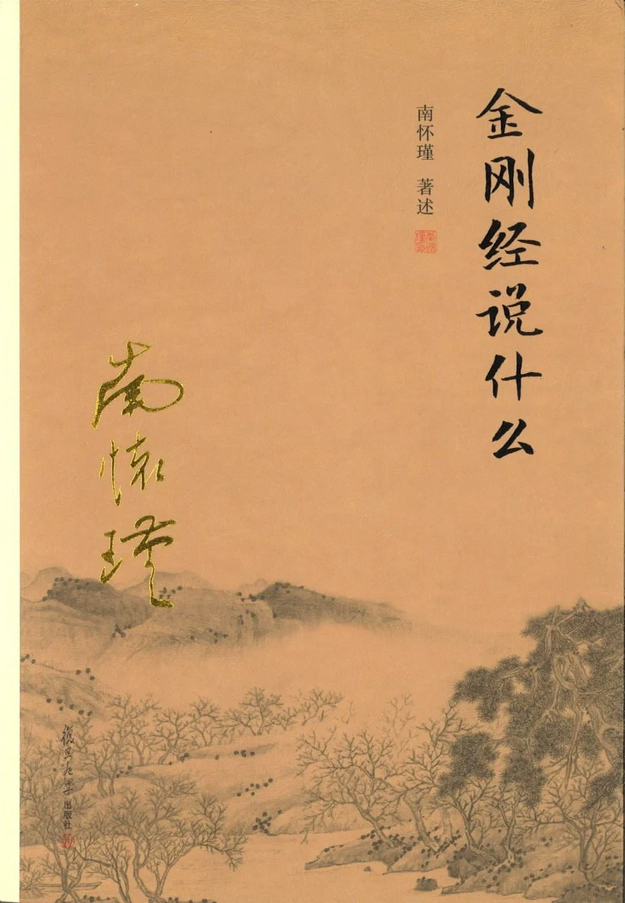

义理体系Doctrine
《金刚经说什么》
南怀瑾的讲经脉络，负责把经文里的般若、四相、无住讲清楚。Nan Huai-Jin's lecture framework clarifies prajna, the four marks, and non-abiding.
AI Agent Skill
「凡所有相，皆是虚妄。
若见诸相非相，即见如来。」
"All that has form is illusory.
See forms as non-forms, and you see the Tathagata."
一个开源 AI Skill，把《金刚经》的般若智慧装进你的 AI。悔过去、忧未来、被身份标签压住时，它陪你把心里的结一句一句讲清楚。 An open-source AI Skill that brings the Diamond Sutra into your agent. When regret, anxiety, or identity labels tighten around you, it helps you talk the knot open, one line at a time.
是什么What it is
它不是算命、鸡汤或电子法师人设。它是一份 Agent Skill：把《金刚经》的核心经义、南怀瑾的讲法脉络、费勇面向现代焦虑的解释，整理成 AI 可以遵循的说话方式。 It is not fortune-telling, therapy cosplay, or a mystical persona. It is an Agent Skill: a structured way for an AI to speak from the Diamond Sutra, Nan Huai-Jin's doctrinal framing, and Fei Yong's modern reading of anxiety.
怎么用Usage
直接点名，或者自然倾诉。它会把问题带回「无所住」和「三心不可得」。 Call it directly, or just speak naturally. It brings the conversation back to non-abiding and the ungraspable mind.
/diamond-sutra
最近项目老被打回，我感觉自己特别失败，脑子一直停在昨天。My project keeps getting rejected. I feel like a failure, and my mind keeps living in yesterday.
你现在抓住的，不只是项目结果，也是一个「我很失败」的相。《金刚经》说「过去心不可得」，昨天那股水已经流走了。今天要做的不是否认难受，而是别把难受做成你的身份。What you are holding is not only the project result, but the mark of "I am a failure." The Diamond Sutra says, 「过去心不可得」: the past mind cannot be grasped. Today's work is not to deny the pain, but to stop making pain your identity.
应无所住，而生其心。 Let the mind arise without dwelling anywhere.《金刚经》The Diamond Sutra
两句要点Two lines to sit with
从两本书蒸馏而成Distilled from two books
Skill 不收录原书全文，只抽取结构、义理和表达风格，并用经文作为底座。 The skill does not reproduce the books. It extracts structure, doctrinal framing, and teaching style, grounded in the sutra.

南怀瑾的讲经脉络，负责把经文里的般若、四相、无住讲清楚。Nan Huai-Jin's lecture framework clarifies prajna, the four marks, and non-abiding.
费勇面向现代焦虑的讲法，负责把经义落到工作、身份和日常烦恼。Fei Yong's anxiety-facing reading brings the teaching into work, identity, and ordinary distress.
英文经文、术语和译本对照见 English scripture renderings and translator notes live in scripture-en.md.
安装Install
npx skills add dull-bird/diamond-sutra-skillgit clone https://github.com/dull-bird/diamond-sutra-skill ~/.claude/skills/diamond-sutra